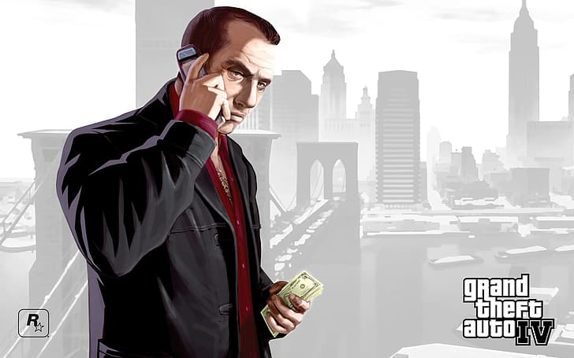
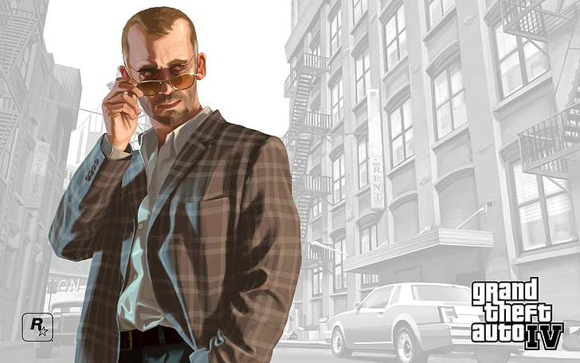

Niko Bellic scende dalla Platypus con una speranza: lasciarsi alle spalle le ombre della guerra. Mentre la nave attracca a Broker, le promesse del cugino Roman sul "Sogno Americano" risuonano nell'aria, ma la realtà è fatta di debiti e vecchi rancori.
Sopravvivere in questa città significa essere costantemente sotto l'occhio vigile della LCPD. Ogni angolo di strada può trasformarsi in una trappola.

Tutto quello che c'è da sapere sulle figure che dominano le strade di Liberty City senza rovinarvi la trama.

Background: Ex soldato veterano delle guerre jugoslave.
Affiliazione: Indipendente (Freelance).
Descrizione: Giunge in America non per ricchezza, ma per trovare qualcuno che ha tradito la sua unità anni prima. È un operativo tattico esperto, capace di freddezza estrema ma legato da una profonda lealtà verso la famiglia.

Background: Trafficante d'armi giamaicano e figura di spicco a Dukes.
Gang: Yardies giamaicani.
Descrizione: Il miglior alleato di Niko. Jacob è un uomo d'onore in un mondo di traditori. Gestisce il commercio di armi pesanti ed è il braccio destro del leader Badman.

Background: Il più giovane della famiglia criminale McReary di Dukes.
Affiliazione: Mafia Irlandese (Irish Mob).
Descrizione: Un rapinatore di banche esperto e impulsivo. Packie è un uomo di strada puro che vede in Niko uno spirito affine. È la chiave per le operazioni più audaci della città.

Background: "Caporegime" della famiglia mafiosa Pegorino.
Famiglia: Famiglia Pegorino (Alderney).
Descrizione: Viscido e ambizioso. Ray opera dal retro della sua pizzeria ad Alderney. È il classico mafioso che usa Niko come pedina per scalare i ranghi di Cosa Nostra.

Background: Mente strategica del sindacato criminale russo.
Affiliazione: Mafia Russa (Bratva).
Descrizione: Un uomo che crede solo nell'opportunismo. Sotto una facciata di calma nasconde una natura manipolatoria. Considera l'amicizia un punto debole.
A differenza di altri, Niko non cerca il potere. La sua ricerca di Florian Cravic e Darko Brevic lo porterà a scoprire che il passato non si può cancellare. Liberty City non è una terra di opportunità, ma un labirinto dove ogni azione ha un prezzo di sangue.
ATTENZIONE SPOILER: La scelta finale tra Vendetta e Affare non offre una vera vittoria, ma solo diverse sfumature di perdita.
© 2026 Red Company - Creato per la community di GTA IV